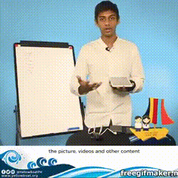
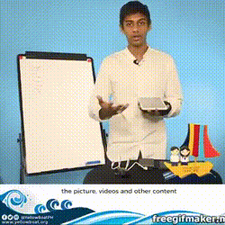
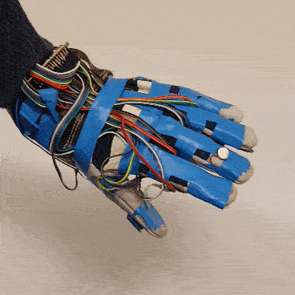
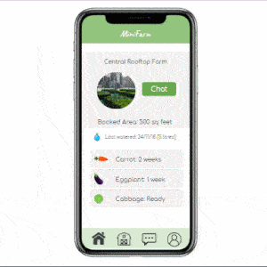
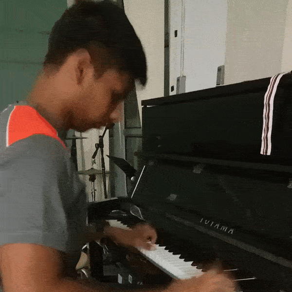

OSREI


OSREI or the Open Source Remote Education Initiative is a project that aims to solve educational disparity by providing high quality crowd sourced educational content through tablet computers and the cloud. OSREI is already in Vietnam, the Philippines and India!
My Role
I founded OSREI with Tejasvi Mehra at The University of Hong Kong. I was in charge of organizing our expeditions, securing funding, building the website and building a script that allows us to upload and download educational content onto the android tablets via the dropbox platform. I am in charge of the Philippines and India chapters of the project.
Why
I am passionate about disparity in education and digital literacy.
I was inspired by Suguta Mitra's Hole in the Wall project and decided to upgrade it for this decade!

Coral reef ecosystems are some of the diverse and valuable ecosystems on earth. We started Mindorobots to make it affordable and viable for local communities to photograph, map and conserve their reefs.
A giant issue with coral conservation is that reef mapping is done by divers moving and photographing a PVC quadrat for every unit area of the reef. MindoroBot is a swarm-robot which can sail and photograph and map reefs autonomously at a low cost with a laser quadrat. We hacked an aerial mapping drone to be able to do this and ran our prototype in Mindoro island, the Philippines.
My Role
I founded Mindorobots with TED senior fellow Cesar Harada and Rohak Singhal. I was in charge of hacking the aeriel drone's PIX4D Photogrammetry Mapping Software to be able to map Coral Reefs and making the gimbal for the camera. Further, I built numerous laser quadrats to understand how the reef image can be converted to 3D from a 2D image. I worked on algorithms for pose estimation and robot navigation.
My work will be presented at RCUK 2018, London and EI 2019 in San Francisco! We won the runners up at the James Dyson Award and were broadcast on numerous news outlets for our work. See the project site or facebook for more!
Why
The concept of vision has always intrigued me. I am also fascinated by the parallels between human biology and the technology we're building to (in some sense) mimic it. Stereo vison and how robots can percive sight is a question I love exploring - Mindorbots, to me, is an incredible application of the same.
The Vayu Project is a team effort by students and professors at the bionics and control lab at The University of Hong Kong to build a Guinness record-breaking robotic fish.
This project looks to engineering a robot that mimics the highly efficient natural motion of fish and delivers high performance and efficiency. The project aims to break a Guinness World Record shortly by making the Vayu robot the fastest robotic fish to have ever been built -we're trying to be faster than Phelps!
The robot is a complex piece of technology and pushes the limits of bio-mimicry and underwater engineering like never before.
Vayu in Sanskrit is a fast wind and Yu in Chinese means fish.
My Role
I founded the Vayu Project with Dr. Zheng Wang at the University of Hong Kong. I am in charge of supervising and building the electronics and computer systems on the Vayu Robot. I also lead the project direction and outreach.
My first research paper (and the first project paper!) were presented by me at PAAMES/AMEC 2018 in Busan about Vayu. I applied to the Guinness Book of World Records for this project when I was in high school for this record category and got approval in 2016 to attempt - thus VAYU was born. Do check out our facebook page!
Why
I believe that nature holds some of the most elegant solutions to our most challenging engineering problems. I love bio-mimetics and I've been attempting to make biomimetic bots since I was 13. I actively follow the work of key researchers in this area!


At NxtBraille our goal is to develop open-source, freely distributed, integrated braille reader/keyboard for smartphones. Current refreshable braille displays cost upwards of 700USD. We're replacing the expensive piezo system with a new haptic interface to help cut the cost to under 20USD.
Our idea is to make braille based smartphone access more convenient/accessible for visually impaired people and help support greater digital literacy in the community. Since the project is open source, anyone can freely add to the project, improve it or replicate it or sell it without any patenting royalties. This will significantly reduce the cost and increase the availability of these devices.
My Role
I founded the NextBraille with Rohak Singhal at the University of Hong Kong. I was entirely responsible for the ideation, design and implemention of the keyboard. I also came up the the "Vibraille" concept - a vibration based haptic interface that allows the person to communicate with their device through their skin using sensory substitution .The team then implemented this idea into a reader.
Why
I love experimenting with interfaces. I often ask myself "How can we communicate better with our technology". I love thinking about Data-minimalization and how we can abstract data and feed it into the body using different techniques. I've experimented with haptics, EMG's etc. The visually impaired community in particular is a fascinating group of people to work with on interfaces due to their unique worldview.


"Can we help amputees regain the sensory perception of having limbs?", "Can we build an open source product that can be built entirely with off the shelf parts?"
Although numerous companies in the open source prosthetics space - none are using open hardware and off the shelf resources - making users depend on their hardware/software systems to be able to use the designs. We are trying to change that by building an open source hand which allows users to control and well as feel back using their prosthetic limbs. Our goal is to deliver a product that anyone can download for free and 3D print and whose components can be bought off the shelf from any large online retailer like Amazon or Taobao.
We are using open hardware platforms like the arduino to be able to make this possible. We aim to deliver a design that can be scaled easily for any size and would cost under 100 USD to build yourself.
My Role
This project is my Final Year Project under Edmund Lam at the University of Hong Kong. As a result of the University course structure, this project is solo!
Why
I love experimenting with interfaces. I often ask myself "How can we communicate better with our technology?". I love thinking about Data-minimalization and how we can abstract data and feed it into the body using different techniques. "How much data can we interface through our skin?". My idol is Ironman and prothethics as close to Ironman I think I'm going to get - add both interests up and you get Handuino
This project's goal was for me to break a national record before my 16th Birthday. I built the smallest bipedal robot in India. The robot robot is only 5 inches tall and perfectly capable of walking. It can also kick, move down slopes and dance!
More here
My Role
This project was a solo work!
I was award the a national record by the Limca Book of Records in India. My work was featured on numerous Indian news channels and papers.
Why
To me, the vision of the human experiment to try and mimic ourselves is the source of robotics itself. I was always fascinated by the Honda Asimo - to teenage Sid, the ultimate expression of how far robotics had come. I decided to build my own Asimo - and try and break a record with it. Once at University, I had the opportunity to work with the Boston Dynamics Atlas because of this!

I did a training course with FANUC - an industrial robotic arm manufacturing company. At the end of the course I wanted to better my understanding of robot arms - hence I tried to build one myself. This would later become my second national record with the Limca Book of Records.
More here
My Role
This project was a solo work!
I was award the a national record by the Limca Book of Records in India. My work was featured on numerous Indian news channels and papers.
Why
To me, the vision of the human experiment to try and mimic ourselves is the source of robotics itself. My parent's own a small manufacturing unit and I've seen industrial robots at work! I've always been amazed by them and this I tried to make my own. Later this would drive me to study Soft Robots at Peking University and I now look forward to bringing "5 Minute Automation" into the world!

Fire iVacuation System
A huge number of lives are lost every year to fire. Studied show that the largest cause of death during fire is inability to escape due to route blockage. I build a smart IOT based fire evacuation system that monitors the fire temperature, CO2 levels etc and displays an escapte route in realtime to help unfamiliar evacuees. Further, it maps the fire for the fire department so that they can optimize their attack strategy.
My Role
This project was a solo work!
Why
My quest is to leverage technology to solve problems and overcome challenges for humanity. Fires take countless lives each year. I decided I was going to try and make a difference!
3D Box Scanner
This project uses a Xbox Kinect to Scan Boxes! Just show all the sides of the box (roll it around) to the camera and the code will return a 3D point cloud of the scanned box!
My Role
This project was a solo work!
Why
I'm amazed by how our eyes help us percieve distace through stereo vision. I also love my Xbox and its Kinect system. I decided to hack the two together to make a "3D scanner" that can scan boxes!

OSREI
The Mindorobots Project

The Vayu Project

Handuino
Bipedal Robot
Robotic Arm
PC Box Extraction
Compliant Robot Simulation

GPU Mapping Realtime

Shirt Folder

PCB Manufacture: NE555 Organ

7 Stage Rube Goldberg Machine

Fish Feeder

MTR Madness!

Sentry Gun

Logo/UX Design
CodeXpress Myanmar

The White Room (Utrecht)

Trapped Documentary (2017)

Model United Nations

Music Composition
Portfolio


"My quest is to leverage technology to solve problems and overcome challenges for humanity. I hope to build technology that empowers people develop solutions to their own problems so that we can in a decentralized way, make the world a better place."
I am fascinated by the relation between technology and nature, it’s modelling, interfacing and analysis to solve problems. I love the synergy of hardware and software, of innovation and the economy. I chase connections between different areas of study, the transdisciplinarity and translations of ideas in one domain to another to think out of the box.
I hope my work will impact the Environment -> People -> Technology -> Economy.
I broke a national record at the age of 16 for building India’s smallest Bipedal Robot, I spoke at a TEDx event in Hong Kong last year, am a Mensa member.
I’m on the dean’s list at HKU and I have presented/will present papers at PAAMES/AMEC 2018, RCUK 2018 and at EI 2019 IRIACV.
I've won awards at the James Dyson Award, 81' Inclusion Fund, Gallant Ho Experiential Learning Fund, Government of India Top 1% Award, SY King Prize for Academic Excellence, HKSAR Government Reaching Out Award, Arthur and Louise May award among others.
I’ve spoken at TEDxCityUHongKong, the EARS@UoE and at the Own Future Fair and studied at the University of Edinburgh, Peking University and Utrecht University through exchange programs.
I use and create technology to disruptively solve problems via a transdisciplinary, design thinking approach. A list of my major projects can be found above.
I believe creativity is driven by diversifying experiences. I’ve worked on Marxist Alienation, Coral Reef Bleaching, Flipped-Education and Neuroscience, Business Consulting (via Eureka Consulting Group, HKU), am a Trinity College of London certified Grade 7 Pianist and have traveled to 25 countries in a quest to understand cultures and represent my own.
Near-Future: [Jan-May 2019] I shall be working with Alessandro Ponzo, to build an open source photogrammetry suites & BRUV’s. I shall be working on Clearbot in Bali - a biomimetic ocean plastic cleaning device and at Phandeeyar in Burma to consult for startups.

Influencer. Maker. Nomad. Blithering Idiot.
Sid likes to ask, "When do people stop having fun in life?"
When Sid isn't working he's working on ticking off items on his osumposum bucketlist.
Sid has a multi-layered vision-why-quest definition. Check out the dynamic doc here.
Sid tries to improve by 1% everyday by learning and applying ideas. He maps his knowledge and learning here.
Updated scans of his ideas book will be put up here soon!
A timeline of Sid's life can be found by stalking his facebook page.
Near Future: Currently I'm working on writing a book about robotics for kids, starting a YouTube Channel and a new personal network mapping software to help me build valuable, long lasting relationships.
Media
TEDxCityUHongKong 2018 | How To Be Time Lord
Smallest Bipedal Robot India (2013)

Smallest Robotic Arm India (2015)

Harvard Model United Nations (2014)

Mindorobots (2018)

Indian Board Topper (2015)
IoT Hackathon by ITC (2015)
TV: Smallest Bipedal Robot India (2013)

TV: Smallest Robotic Arm India (2015)

TV: Model United Nations (2013 and 2014)

TV: Mindorobots Philippines (2018)

Sidhant Gupta
304, 5th Main, 1st Block,
Koramangala, Bangalore - 560034,
Karnataka, India.
(+91) 9902801600
(+852) 51385925
Reach me at sdhnt@connect.hku.hk